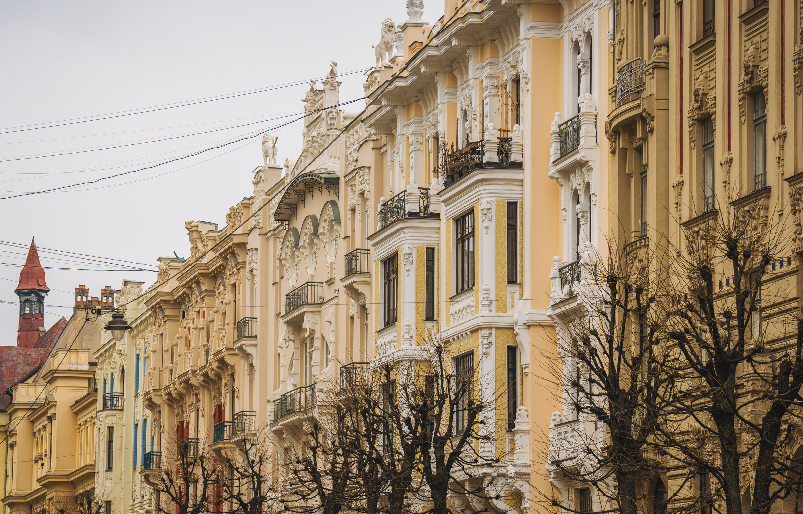
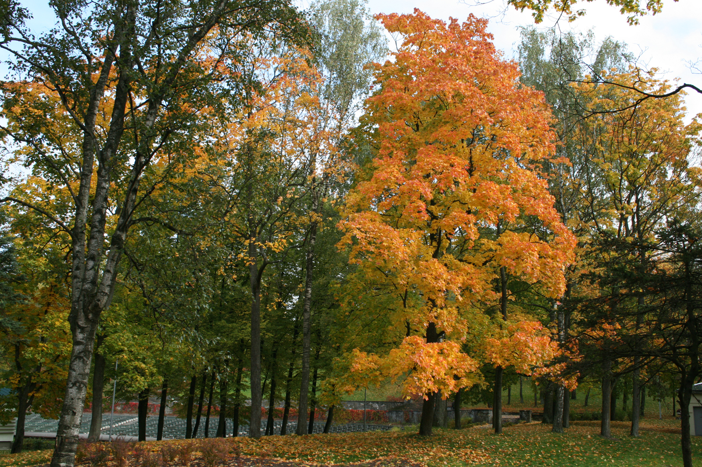
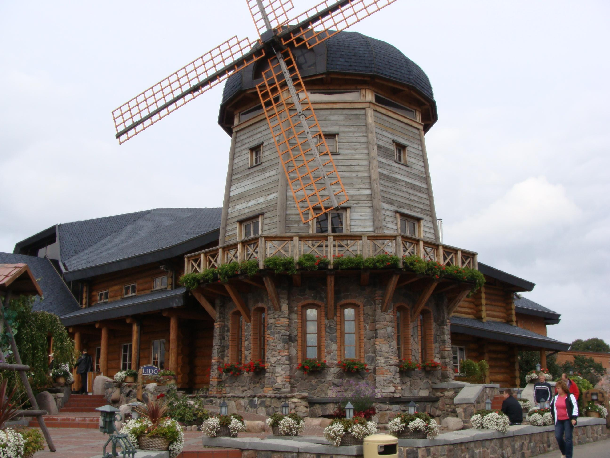
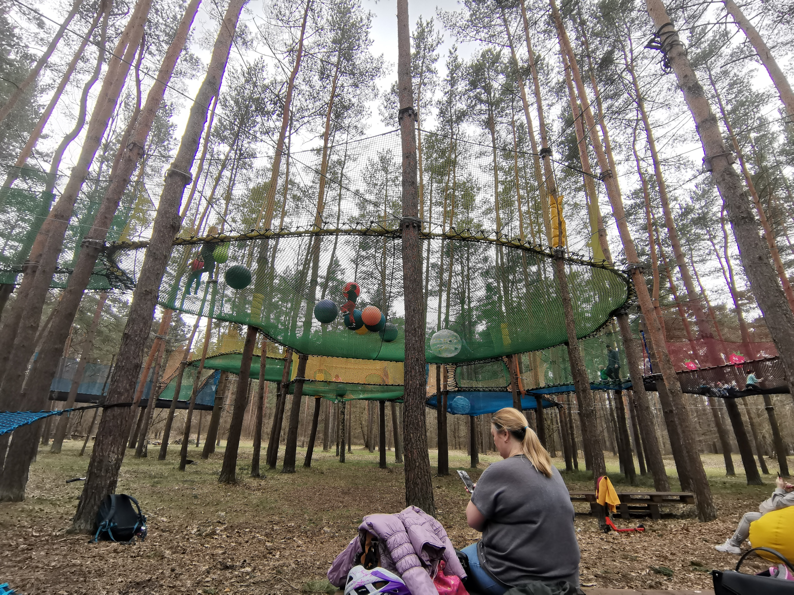
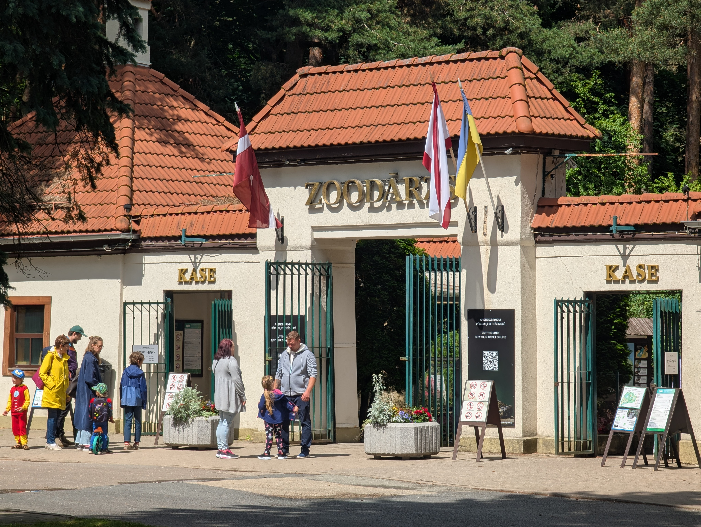

You've booked the plane tickets on a whim. Blame it on Ryanair's flash sale. A weekend in Riga seemed like a brilliant idea.
You even went as far as jotting down the Latvian for "hello" (labdien!) and "thank you" (paldies!) in your Notes app.
CRIKEY!
Now that you've checked into your hotel in Riga, where do you head first?
Worry not. Our all-round Riga guide has been specifically created for travellers haunted by a spur-of-the-moment itch.
Whether you're a history nerd or a hunter of Instagrammable views. Whether it's live music, a hearty meal with a bevvy, or a foray into nature (with kids or not) that gives you a thrill, Riga has plenty to offer. Add to that a local's perspective — things they love doing, places they choose to spend time in day-to-day — and you're all set to soak up the authentic city vibe like a true Rigan.
Got a weekend to spare? Here's our pick of the best things to do in Riga, with a few local favourites thrown in for good measure.
Get a Feel for Old Riga
For Whom: Whether it's your first time in Riga, you love a bit of old-world charm, or you can spend ages admiring every curl and curve of historic façades, Alberta Street is well worth a visit.
Where: Dome Square in the Old Town
If there’s anything almost any Riga tourist would pat themselves on the back for, it’s checking off these iconic city spots. But there's more to these places than good looks and a string of pictures to show your mum back home.
Explore the Heart of Old Riga at Dome Square

Dome Square (Doma laukums) sits right in the heart of Vecrīga (Old Town), amid centuries-old buildings and narrow cobbled streets. Its centrepiece is Riga Cathedral. Despite its venerable age, dating back to the 13th century, it’s still very much alive, holding religious services and hosting organ performances. Whichever route you take from there, you’ll bump into cafes, restaurants and craft shops tucked into centuries-old buildings.
Why visit: You can reach Dome Square from just about any direction (seven streets lead into it, to be precise). So chances are you'll find yourself here more than once while wandering through the Old Town. It's a place to slow down, get a feel for centuries of history around you, watch locals and tourists go by, or grab a coffee and give your feet a break. And if you figure out where to stand, you can spot the golden cockerels on three Old Town church spires at once.
Local take: For locals, Dome Square is the place to meet, catch live music, and flock to for seasonal markets and celebrations. If you drop by around the summer solstice (Līgo), good luck walking away without trying some traditional Latvian food or treating yourself to a flower wreath or a handmade souvenir.
Come December, it's all about Christmas market stalls, steaming mulled wine, local treats and gifts made by Latvian craftspeople. Leaving empty-handed? Just as impossible.
Notes: Dome Square is free to explore, but you'll need a ticket to visit Riga Cathedral. Check the official cathedral website for prices and opening hours.
Look Up on Alberta Street

Where: Riga's so-called Quiet Centre, a short walk from the Old Town
If for you buildings normally mean walls, windows and roofs, Alberta Street might change your mind. Here, “walls” come with expressive faces, mythical creatures, quirky ornaments and enough decorative detail to keep your head tilted upwards. It's one of Riga's best-known Art Nouveau streets, with much of its architecture dating back to the early 1900s.
Why visit: Take your time walking along the street. Some buildings are so packed with detail that you'll spot something new every time you look up. If architecture really gets you going, pop into the Riga Art Nouveau Centre to see what life inside one of these buildings looked like over a century ago.
Local take: What's peculiar is that people still live and work behind these extravagant façades (the street is densely populated with foreign embassies). Naturally, if you own a flat here, you've every reason to feel a little smug about it. But you don't have to live on Alberta Street to appreciate it. For many Rigans, it's part of an ordinary walk across the city centre. Ducking off a busy street into this quiet, beautiful corner of Riga is one way to clear your head of the city's bustle.
Notes: You'll need a ticket to visit the Riga Art Nouveau Centre at Alberta iela 12. Check the official museum website for opening hours and admission prices. The museum entrance is on Strēlnieku Street.
See Riga from a Different Angle
For whom: If you've a quirky habit of looking at familiar landmarks from a different perspective, whether over a drink, a meal or neither, Riga has a few places worth climbing (or taking a lift) for.
Where: St. Peter's Church in the Old Town, Skyline Bar at Radisson Blu Latvija, Galleria Riga rooftop, Dzegužkalns Park.
Once you've taken enough pictures from ground level, how about switching to a bird's-eye view? Whether you fancy looking down on the Old Town's red rooftops, watching the city lights come on over a cocktail, or finding a quieter spot away from the centre, here are four ways to get a fresh perspective.
Get Above the Rooftops at St. Peter's Church

If you're already wandering through Vecrīga, the tall church spire you see rising above the rooftops is St. Peter's Church. And yes, you can go up.
Why visit: From the viewing platform, you get a truly stunning view. Rooftops in every shade of rusty red, narrow streets zigzagging between old buildings, church spires popping up here and there, and the wide Daugava cutting through the city. Many of those postcard-perfect views of Riga you've seen in travel brochures were taken from St. Peter's Church. You can follow suit. Just don't expect to have the platform entirely to yourself, especially when everyone else has the same idea about getting that perfect shot.
Local take: Locals aren't likely to visit the viewing platform unless they're showing guests around Riga. But many come to St. Peter's Church for the art and craft exhibitions, concerts and cultural events it hosts. Latvians have a strong tradition of arts and crafts, so it's worth checking what's on inside the church rather than heading straight for the lift.
Notes: Reformācijas laukums 1. You'll need a ticket for the viewing platform. There's a lift, but you still have to climb some stairs to reach it. Check the official church website for visiting hours and ticket information.
Riga at Your Feet in Skyline Bar

For sweeping views of Riga, without having to climb a church tower, head to Skyline Bar on the 26th floor of Radisson Blu Latvija.
Why visit: From up here, you get to see a good chunk of Riga, not just the Old Town. If you come before sunset, you can watch the city turn into a sea of lights. Order something to eat or drink, settle into a window-side seat and see if you still feel like leaving after an hour.
Local take: With views like these, locals come here to celebrate special occasions, catch up over a lazy brunch with a bestie, or go on a date.
Notes: Elizabetes iela 55, 26th floor. Walk-ins are welcome, but you can also book a table in advance. Check the official Skyline Bar website for opening hours, the menu and reservation details.
Take Your Lunch Upstairs at Galleria Riga
During the warmer months, if you're in the city centre and keen to have an off-the-ground experience, head to Galleria Riga and make your way up to the rooftop dining area.
Why visit: Herbary is an open-air dining spot on the eighth floor, with greenery all around and a 360° view of central Riga. Order yourself something nice, settle in and enjoy figuring out which streets and landmarks you're looking at between bites.
Local take: For locals, this one's easy to work into an ordinary day in Riga — after shopping, for lunch with a friend, or to catch up over drinks. Sometimes you just want to sit somewhere pleasant with a bit of oomph.
Notes: Dzirnavu iela 67, Galleria Riga. Check the Galleria Riga website for current rooftop venues and access arrangements.
Take a Walk with a View in Dzegužkalns

If you feel like swapping lifts, cocktails and observation decks for a bit of fresh air, Dzegužkalns, Riga's highest natural hill, is your place.
Why visit: At 28 metres above sea level, it's quite an exception to Riga's otherwise flat terrain. While it won't leave you gasping for breath, it'll give you a different perspective on the city. Instead of being surrounded by concrete and stone buildings, you're in a green park, with paths, trees and glimpses of Riga's skyline. Think of it as a walk with a view, complete with an open-air observation point. Come in summer, and you might even catch an open-air concert.
Local take: Dzegužkalns sits on the border of Dzirciems and Iļģuciems, two of Riga's older neighbourhoods. The surrounding area has a character of its own, with traces of the Soviet era still popping up here and there. For locals, the park is part of everyday life — strolling, walking the dog, jogging or simply escaping the four walls for a while. If you've had enough of the busy Old Town, here's your chance to see another side of Riga.
Notes: Dzegužkalns Park, on the left bank of the Daugava. Allow some extra travel time from the Old Town.
Shop and Eat Like a Local
For whom: If you're curious about what Rigans buy for dinner, fancy trying local food, or enjoy wandering through a market with no shopping list in hand, this one's for you.
Where: Riga Central Market, Āgenskalns Market and LIDO Recreation Centre.
Want to get a taste of everyday Riga? Follow the locals on their grocery runs. This is Riga at its most authentic: market stalls piled with fresh produce, pickles, smoked fish and homemade treats. Even if you're not planning to cook, you'll find plenty to sample. And when hunger strikes, there's always somewhere to sit down for a proper Latvian meal.
Go Grocery Shopping in Historic Hangars

You don't have to be shopping for dinner to enjoy Riga Central Market. Just wander through the enormous pavilions, see what's on offer and maybe pick up something you didn't know you wanted.
Why visit: Housed in five former Zeppelin hangars, the market is an experience in itself. You'll find everything from fresh vegetables and berries to smoked meats, fish, cheeses and Latvian rye bread. It's a great place to discover what goes into local cooking and perhaps take a few edible souvenirs home. So try the pickles, look out for seasonal berries and don't be shy about asking what's good today.
Local take: For many Rigans, the Central Market isn't an attraction to tick off. It's where they come for particular foods, compare what's on offer, chat with the sellers, or grab a bite and a cup of coffee to take a break from shopping.
Notes: Nēģu iela 7, near Riga Central Station. Check the official Central Market website for opening hours and market information.
Snack and Hang Out at Āgenskalns Market

Across the Daugava, Āgenskalns Market combines an old-fashioned neighbourhood market with somewhere to stop for a bite.
Why visit: The restored market building has plenty of fresh produce, bread, cheese and other food stalls, with places to grab a meal or coffee upstairs. It's smaller and easier to get your head around than Central Market, making it a good option if you prefer a more relaxed outing.
Local take: This is somewhere residents come to pick up groceries, meet friends or stay for lunch. You can do the same: wander around the stalls, buy something that catches your eye and settle in for a bite without feeling like you're on a sightseeing mission.
Notes: Nometņu iela 64. Check the official market website for opening hours and events.
Fill Your Plate the Latvian Way: LIDO Recreation Centre

If all that food shopping has made you hungry, LIDO is a good place to try a proper meal without deciphering an elaborate restaurant menu.
Why visit: Pick up a tray, see what's cooking and choose what makes your mouth water. Expect hearty portions of meat, potatoes, vegetables, soups and traditional Latvian dishes. The large LIDO Recreation Centre also has a distinctive wooden building and grounds where you can spend some time after eating.
Local take: LIDO is familiar to generations of Rigans. It's where families go for a meal, colleagues stop for lunch, and people head when they want familiar food without much fuss. No need to dress up or plan your evening around it. Just turn up hungry.
Notes: Krasta iela 76. Check the official LIDO website for opening hours and current food options.
Do Something Unexpected in Riga
For whom: If the usual tourist checklist was never your thing, how about a shipwreck, screeching tyres or a trip through a century of fashion?
Where: Mangaļsala on the Baltic coast, Biķernieki racing circuit and the Fashion Museum in the Old Town.
For a city known for its Art Nouveau buildings and medieval streets, Riga has a few surprises up its sleeve. Some take you beyond the usual city-centre haunts, but you won't have to venture far. Here are three unusual things to do in Riga when you're after something with a bit of a twist.
Hunt Down a Shipwreck at Mangaļsala

Yes, there's an actual shipwreck off Riga's coast, and you can spot it right from the shore.
Why visit: The remains of Lady Cotlin, a concrete cargo ship that ran aground during a storm in 1951, are still visible above the water. A ship made of concrete might sound like a terrible idea, but apparently, people did build them. The wreck isn't the only reason to come, either. You've got the beach, pine woods and the long Mangaļsala pier to explore.
Local take: For Rigans, Mangaļsala is somewhere to escape the city for a few hours and get some sea air. Some come for the waves and the wind, others for a long walk along the shore. The shipwreck adds an unexpected twist to an otherwise ordinary beach outing.
Notes: Mangaļsala, near the mouth of the Daugava. The wreck lies offshore and can be viewed from the beach. Allow extra time to reach the area from central Riga.
Watch the Drifting Action at Biķernieki

If the sound of revving engines gets your pulse going, you might want to check what's happening at Biķernieki, Riga's racing circuit.
Why visit: This isn't just a place for watching cars go round a track. The cars go sideways through corners, with tyres screeching and spectators going wild. Even if you've never watched drifting before, it doesn't take long to understand why people get so excited about it.
Local take: Motorsports have their own following in Riga, and Biķernieki attracts both dedicated fans and curious first-timers. Since the track sits next to Biķernieki Forest, you can go for a walk like a local, follow the roar of engines to the circuit and sneak a peek at the action from outside the venue. Either way, it's a very different way to spend an afternoon from wandering around the Old Town.
Notes: Sergeja Eizenšteina iela 16. Drifting takes place on scheduled event days. Check Drift Latvia for announcements and ticket information.
Step Back in Fashion History at Riga's Fashion Museum

Ever looked at an old photograph and wondered how anyone managed to get dressed like that every morning? Riga's Fashion Museum might help answer that.
Why visit: Instead of another room full of paintings, you'll find clothes, accessories and fashion stories from different eras. The museum works with the Alexander Vassilyev Foundation, and its changing exhibitions give you a chance to see how fashion, society and everyday life have influenced each other.
Local take: Rigans have a soft spot for art, history and culture, so a good exhibition rarely goes unnoticed. And the Fashion Museum isn't showing just any old clothes. Its exhibitions feature pieces from fashion historian Alexander Vassilyev's private collection. For locals, it's another chance to appreciate the artistry behind fashion, right in the heart of the Old Town.
Notes: Grēcinieku iela 24, Old Town. Admission is ticketed. Check the Fashion Museum website for the current exhibition, opening hours and ticket prices.
Get Outdoors or Entertain the Kids
For whom: If you've got kids with energy to burn, or you've had enough of buildings and city streets yourself, Riga has plenty of green space to chill, get moving or let the kids run wild for a while.
Where: Mežaparks, Lake Ķīšezers and Riga Zoo, all in the same part of the city.
You don't have to leave Riga to swap the city bustle for trees, fresh air and a bit of space. Head to Mežaparks to walk, cycle, exercise and spend time with your family. There's enough to keep you busy for a good part of the day, especially if you add the zoo to your plans.
Stretch Your Legs and Have Some Fun in Mežaparks

If the kids are getting restless, or you'd rather feel something softer underfoot than cobblestones, Mežaparks is a good place to head.
Why visit: This is no tiny city park with a couple of benches. You've got paths among the pine trees, room to cycle or rollerblade, playgrounds for the kids and Lake Ķīšezers just a short walk away. Come in summer, and you can make your way down to the lakeside for a swim or simply sit by the water. You could easily spend a few hours here without once looking at your sightseeing list.
Local take: For Rigans, Mežaparks is part of weekend life. Families come with bikes and scooters, runners get their miles in, and friends meet for a walk that often ends up taking longer than planned. When the weather's good, the lakeside draws its own crowd. It's the sort of place locals return to regularly, not somewhere they visit once and tick off.
Notes: Mežaparks, in northern Riga. Take tram 11 from the city centre towards Mežaparks. The park is open to visitors, and some activities and equipment rentals have separate charges.
Spend an Afternoon at Riga Zoo

If you're visiting with children, Riga Zoo makes an easy addition to a day at Mežaparks. It's right next to the park, so you don't have to travel across the city to fit both into your plans.
Why visit: From giraffes and big cats to reptiles and birds, there's plenty here to keep curious kids occupied. You can wander between the enclosures, take breaks when little legs get tired and let the children decide which animals deserve another look. It's a welcome change if they've spent the morning staring at old buildings.
Local take: For many Riga families, the zoo is a familiar weekend outing. Parents who came here as children now bring their own kids. It's not necessarily about seeing something new every time. Sometimes it's about revisiting favourite animals and spending a few hours together outdoors.
Notes: Meža prospekts 1. Admission is ticketed. Check the official Riga Zoo website for opening hours, ticket prices and seasonal activities.
FAQs
What not to miss in Riga?
If it's your first visit, the must-see places are the historic Old Town and city centre, including the Freedom Monument (Milda), Bastejkalns Park and Riga Central Market. If you've got more time, venture beyond the usual tourist trail to places like Mežaparks, head to Jūrmala for a day by the sea, or explore Mangaļsala for something a little more off the beaten track.
Is Riga, Latvia worth visiting?
Absolutely. Riga has a character of its own, shaped by its contrasting history and reflected in the city's vibe. If you enjoy places where the distant past meets more recent history, modern city life and local traditions, Riga won't leave you indifferent.
How many days in Riga is enough?
You can get a good first impression of Riga in two or three days without rushing. That's exactly what our article covers. You'll leave with a good feel for the city and probably a few reasons to come back.
What is Riga best known for?
Riga is best known for its UNESCO-listed historic centre, medieval Old Town and Art Nouveau architecture, all within walking distance of each other. Beyond the historic streets, you'll find parks and green spaces, along with a lively arts scene where music, exhibitions and traditional crafts all have their place.
Final Thoughts
Riga may be a small city, but it packs in centuries of history, an eclectic mix of architecture, art, crafts and nature. There's enough to keep you busy, whether you're travelling solo, with friends or with family. And the best part? Most of it is within walking distance or a short ride away. So whatever you're into, chances are Riga has something to fill your cup.